Organising a wedding abroad means choosing an enchanting, romantic setting to celebrate your love. These destinations offer varied landscapes, rich cultural traditions and high-quality services, making each one an ideal choice for a memorable celebration. Whether you dream of a wedding among Italian vineyards, on a picturesque Greek island, in an exotic Moroccan palace, on a secluded Corsican beach or amid volcanic landscapes, these destinations have everything to make your big day unforgettable. Let's explore these five dream destinations for an unforgettable wedding.
Why get married abroad?
A wedding abroad offers a host of unique opportunities and challenges. Varied landscapes, rich cultural traditions and high-quality services make these destinations ideal choices for a memorable celebration. However, it is important to consider certain challenges, such as travel logistics and cultural differences.
Tuscany, Italy: a romantic wedding among the vineyards

Tuscany is probably one of the most romantic regions there is. With its hills and vineyards, it is a charming choice. You can say "I do" in an old castle or in the middle of a vineyard. Italian food, fine wines: it's a dream!
Cities such as Florence and Siena are full of history and beauty. You can take excursions to discover Italy's fascinating past. Not forgetting the magnificent landscapes of Chianti, perfect for wedding photos. You and your guests will love it.
Venues to consider:
Castello di Vincigliata
Villa Vignamaggio
Santorini, Greece: a dazzling setting for an elegant wedding
Now on to Santorini. You know, that magnificent place with white houses and blue roofs. The sunsets here are breathtaking. If you want a chic, beautiful wedding, this is where to go. The white churches and terraces make for superb photos.
And that's not all! Santorini also has a fascinating history. You can visit ancient sites, taste local wines or dine in charming tavernas. Not forgetting the black and red sand beaches just nearby. Wandering through the alleys, you will fall in love with the place even more.
Venues to consider:
Santo Winery
Canaves Oia Hotel
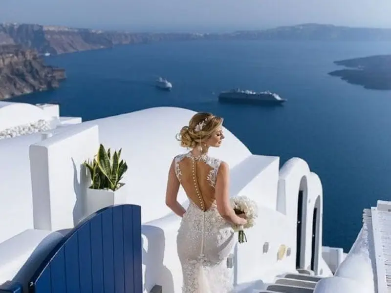
Morocco: an exotic, bewitching wedding
Morocco is an exotic, bewitching wedding destination. With its sumptuous palaces, lush gardens and desert landscapes, it offers a unique, memorable setting. Imagine exchanging vows in a traditional riad or among the dunes of the Sahara, creating unforgettable memories.
Cities such as Marrakech and Fez are rich in history and culture. You can hold your ceremony in iconic venues such as the Palais Namaskar, La Mamounia or Kasbah Tamadot. Guests will also love the colourful souks, traditional hammams and delicious Moroccan cuisine.
Morocco also offers a variety of activities for couples and their guests, such as camel rides, excursions into the Atlas Mountains and visits to the historic medinas. Accommodation ranges from authentic riads to luxury hotels, offering a unique, romantic experience.
Corsica, France: a romantic wedding on the Isle of Beauty
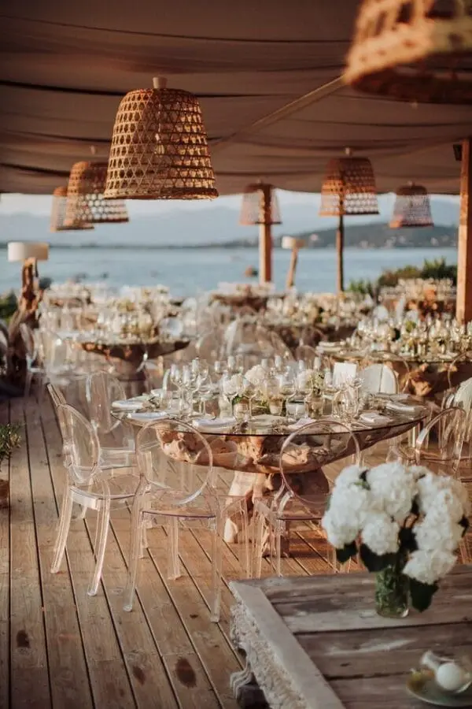
Corsica is a magnificent island with fine sandy beaches, rugged mountains and picturesque villages. A wedding in Corsica guarantees a romantic, authentic atmosphere. You can hold your ceremony on a secluded beach, with the sound of the waves in the background, or in a mountain village surrounded by breathtaking scenery.
Guests will enjoy the local cuisine, rich in Mediterranean flavours, and the renowned Corsican wines. Corsica also offers a variety of activities, such as mountain hikes, boat trips to explore hidden coves and visits to historic villages. Accommodation ranges from luxury hotels to charming guesthouses, offering a unique, memorable experience.
Venues to consider:
Hôtel La Villa
Château de la Punta
Lanzarote, Spain: a unique wedding amid volcanic landscapes
Lanzarote, one of the Canary Islands, is a unique wedding destination. Known for its spectacular volcanic landscapes, black sand beaches and crystal-clear waters, Lanzarote offers an extraordinary setting for an unforgettable wedding ceremony. Imagine exchanging vows among volcanic rock formations, with the Atlantic Ocean as a backdrop.
Lanzarote is also famous for its art and architecture, notably the work of César Manrique, who harmoniously blended nature and culture. You can hold your wedding in iconic venues such as the Jameos del Agua or the Mirador del Río, which offer breathtaking panoramic views.
There is no shortage of activities on Lanzarote. Couples and their guests can explore the national parks, hike through the volcanic landscapes, visit local vineyards and taste unique wines. Lanzarote's beaches, such as Playa Blanca and Papagayo, are perfect for relaxing and enjoying the sun.
Venues to consider:
Timanfaya National Park
Jameos del Agua
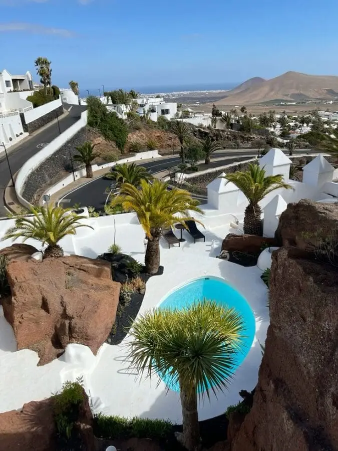
Client reviews
"We were lucky enough to work with Alexandra Ambert of Lovely Day Event for our wedding, and we couldn't be happier with our choice. From the very first contact, Alexandra understood our expectations and wishes. She listened carefully and guided us throughout the preparations. On the day, everything was perfect, from the decor to the coordination of the suppliers. Our guests were amazed by the beauty and organisation of our wedding. Thank you, Alexandra, for making this day so special and unforgettable!"
Charlotte et Bastien
The opportunities of a wedding abroad
Breathtaking natural settings: varied landscapes, from Italian vineyards to Greek beaches, offer magnificent backdrops for unforgettable wedding photos.
High-quality services: destinations abroad are renowned for their high-quality wedding services, including experienced wedding planners, elegant reception venues and refined catering options.
Unique cultural experiences: each destination offers a unique cultural richness, letting couples and their guests discover new traditions and enjoy memorable experiences.
The challenges of a wedding abroad
Travel logistics: organising a wedding abroad can be logistically complex, including coordinating guests' travel and transporting the necessary supplies.
Cultural differences: it is important to familiarise yourself with local customs and marriage laws to avoid misunderstandings or complications.
Potentially high costs: weddings in some destinations can be expensive, because of travel and accommodation costs and high-end services.
My view as a professional
"As a wedding planner and designer at Lovely Day Event, I bring a unique touch to every wedding I organise. My passion for events and my attention to detail make me an exceptional professional. I am not only a talented organiser, but also a creator of unforgettable experiences. I know how to turn couples' dreams into reality, taking care of every aspect of their wedding, from planning to on-the-day coordination. Working with me means a stress-free, perfectly orchestrated wedding."
Alexandra Ambert
Tips for organising a wedding abroad
Before diving into this wonderful adventure, here are a few tips to help you:
Plan ahead: start organising your wedding at least a year in advance to make sure every detail is taken care of.
Inform your guests: give your guests enough time to plan their trip and book accommodation in advance.
Respect local customs: familiarise yourself with local traditions and laws to avoid misunderstandings.
Prepare the necessary documents: make sure you have all the documents required for your marriage to be legally recognised in your home country.
Plan a budget: set a realistic budget that takes into account travel, accommodation, the ceremony and the reception.
Visit the destination beforehand: if possible, make a scouting trip to visit potential wedding venues and meet local suppliers.
Be flexible: bear in mind that some things may not go as planned, so be ready to adapt and enjoy every moment.
In short…
Organising a wedding abroad is much more than a simple ceremony; it is an unforgettable adventure that lets you celebrate your love in extraordinary places. Whether you dream of a romantic wedding among the Tuscan vineyards, an elegant ceremony on the cliffs of Santorini, an exotic celebration in a Moroccan palace, an intimate union on a Corsican beach or a unique wedding amid the volcanic landscapes of Lanzarote, each destination offers a magical, memorable experience.
By choosing to marry abroad, you give yourselves and your guests the opportunity to discover new cultures, savour delicious cuisines and create memories that will last a lifetime, amid breathtaking landscapes.
So why not turn your dream into reality and say "I do" in one of these dream destinations? By following our planning advice and choosing one of these enchanting places, you can be sure your wedding will be an unforgettable event for you and your guests. Make your big day an extraordinary adventure and create memories that will stay etched in your hearts forever.
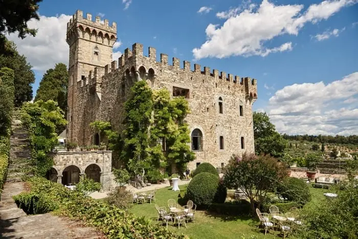
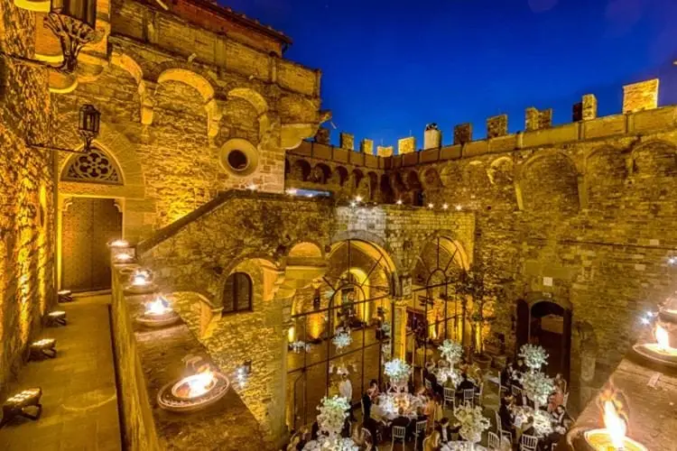
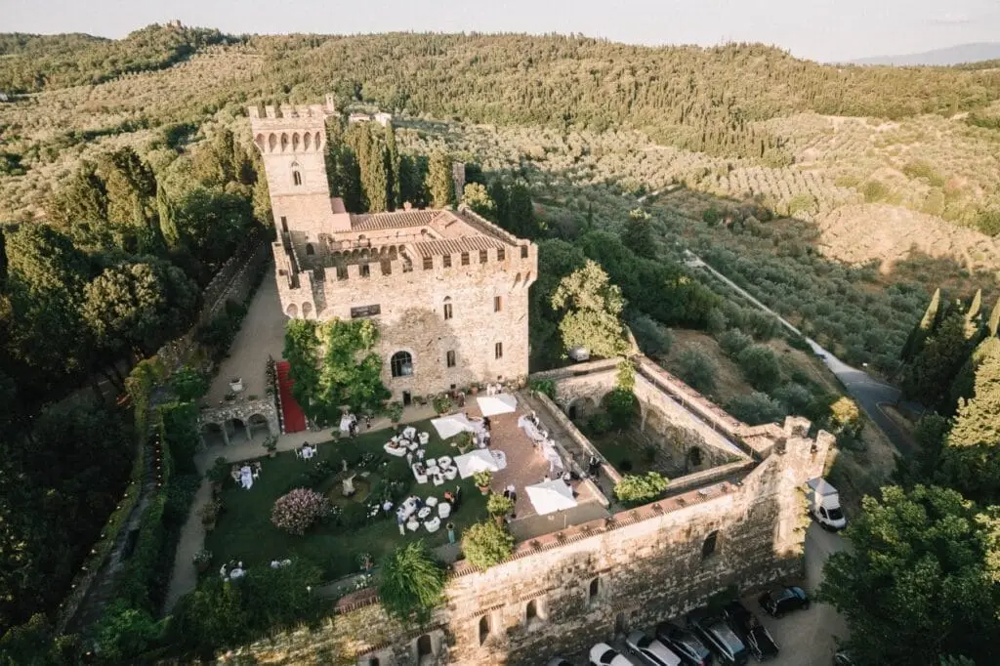


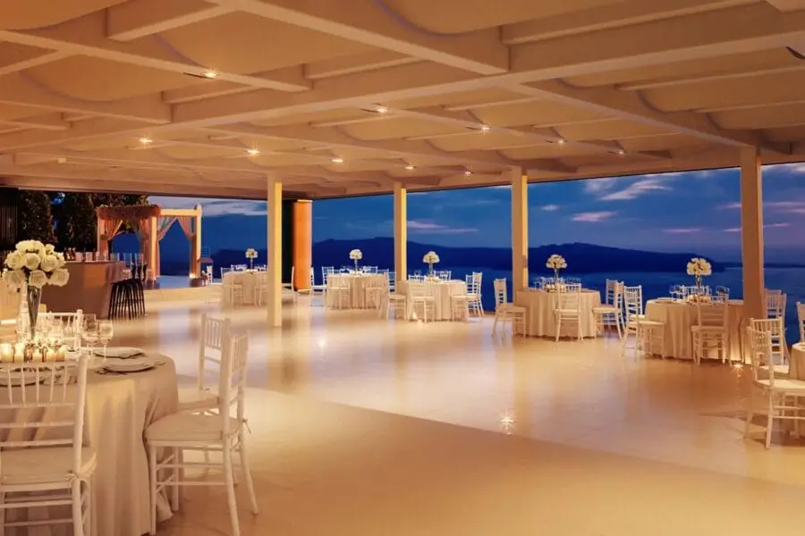
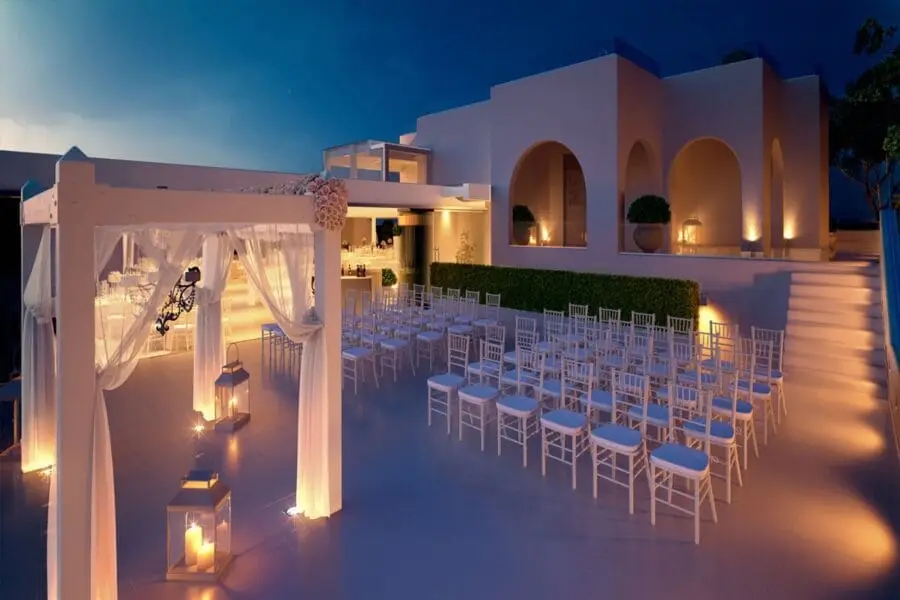
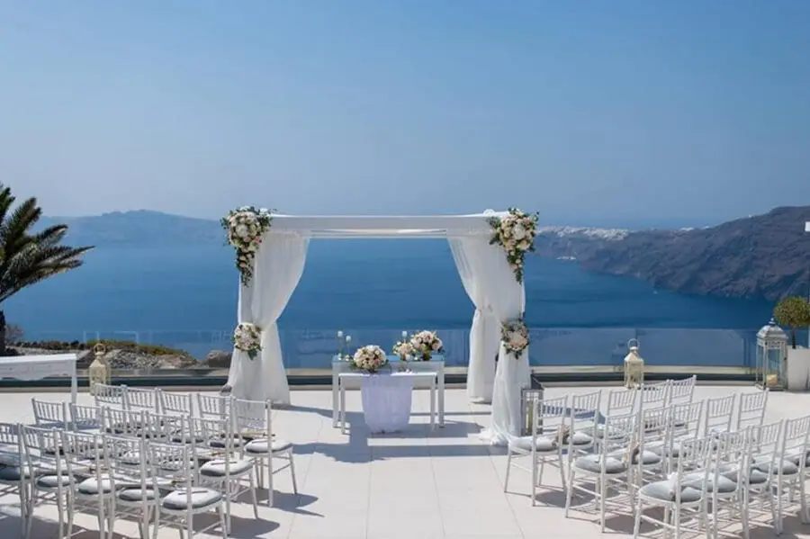


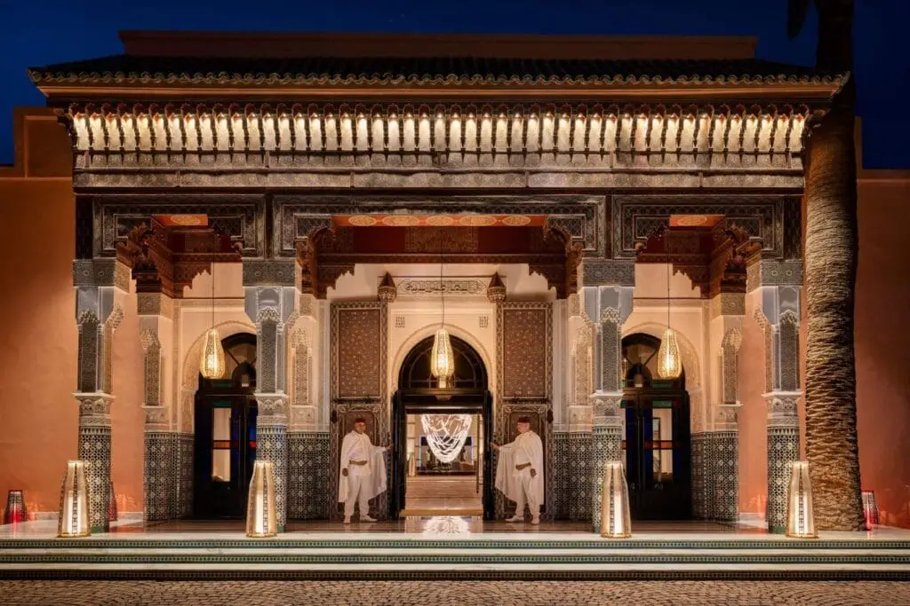


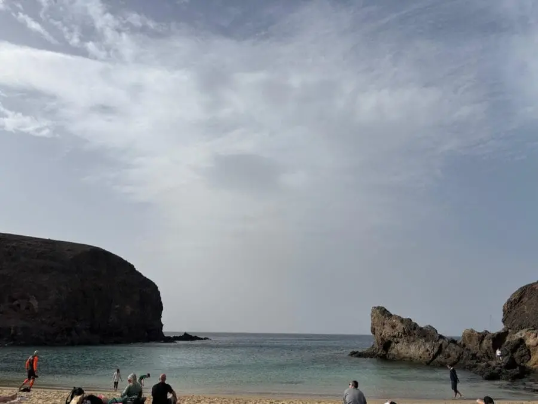
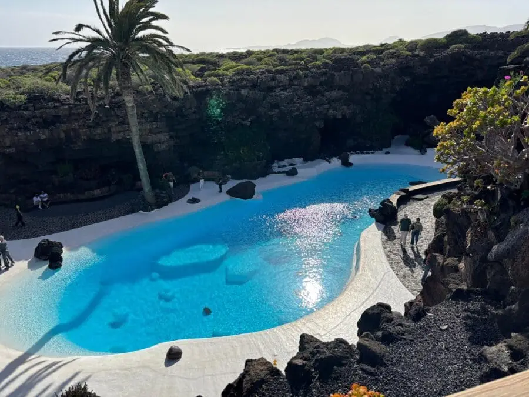

Lovely Day Event offers several services
Wedding planning
I step in at every stage of your preparations and guide you through your choices, bringing ideas and suggestions so that your wedding looks like no one but you.
On-the-day coordination
I will be the conductor of your day, managing the suppliers, the set-up of your decor and the smooth running of this beautiful day.
Wedding design
Creative and passionate, I am a certified Wedding Designer and I create a scenographic atmosphere that matches the theme of your wedding. Styling is included in the Signature package, or offered as an add-on to on-the-day coordination.